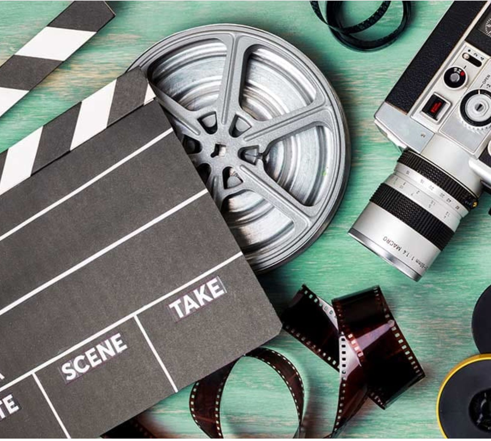

Personalmente me encanta el cine y todo lo que tenga que ver con él, muchas veces, al menos a mí, me han dicho que los libros son mejores, que las películas series o cortos solo evitan que desarrolles tu cerebro. ¡Una tontería si me lo preguntas!
No niego la gran importancia de la literatura, pero, la cinematografía permite expresar ideas y conceptos de formas mucho más variadas. Esta cuenta con múltiples géneros, acción, ciencia ficción, terror, drama, comedia, tienen algo para todas las personas y múltiples formatos de donde elegir, animación; 2D, CGI, Stopmotion, captura de movimiento y sin olvidar la acción real o Life Action.
No solo son videos que tienen una historia que puedes ver entre las hojas. También pueden contar historias únicas, o inclusive hacer mucho más interesantes conceptos de historias, apoyándose de la música o iluminación, así como en el teatro, con planos que te muestran que sucede o siente un personaje sin necesidad de decir una sola palabra, decepción, un ascenso, gloria, pena o sufrimiento.
Con colores que expresan sentimientos, ideologías y amenazas que empequeñecen a nuestros amados protagonistas. Esos héroes de los que te encariñas y quieres que logren sus metas por simples o vagas que puedan llegar a ser, por que llegan a sentirse como amigos, o maestros de los que aprendes a vivir mejor, amar, crecer y volverse mejores.
Es muy complejo y en varios casos también costoso, aun así, vale la pena, ya que no solo nos dejan vivir historias de maneras muy diferentes a lo convencional, cada escena con un encanto único ya sea por lo bella que sea o por lo horrible y graciosa que pueda ser.